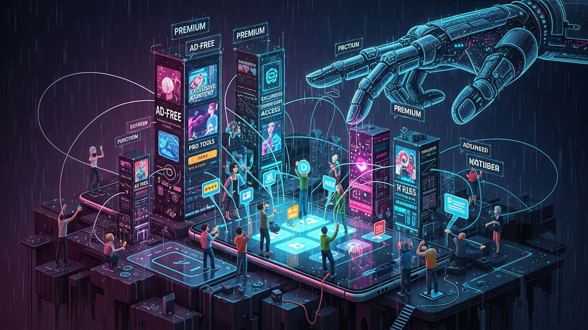

In the vast, interconnected digital landscape we inhabit, the concept of "free" often serves as an irresistible siren song, luring us into ecosystems where value appears to be given without immediate cost. This is the bedrock of the freemium model, a pervasive business strategy adopted by countless apps, from productivity suites and creative tools to entertainment platforms and fitness trackers. At first glance, it seems like a benevolent offering: access to core functionalities without an upfront payment, allowing users to experience the product before committing financially. However, beneath this veneer of generosity lies a sophisticated, meticulously engineered psychological framework designed not merely to offer a service, but to subtly, yet powerfully, steer users towards an upgrade. This isn't just about providing a good product; it's about understanding the intricate workings of the human mind – our biases, our desires, our fears – and leveraging them to convert curiosity into commitment, and commitment into cash. The journey from a casual free user to a loyal, paying subscriber is rarely accidental; it is a carefully choreographed dance of nudges, limitations, and perceived value, all orchestrated to make the premium tier not just desirable, but seemingly essential. This article will dissect the psychological underpinnings of the freemium model, revealing the ingenious ways apps manipulate our minds, transforming the initial gift of "free" into an eventual, often inevitable, financial transaction.
The initial offering of a "free" version is perhaps the most potent psychological hook in the freemium arsenal. It immediately dismantles the primary barrier to adoption: financial risk. Users are naturally risk-averse, and the promise of zero monetary commitment makes trying out a new app an effortless decision. This low-friction entry point is crucial because it allows the app to bypass the initial skepticism and immediately begin building a relationship with the user. Once a user downloads and starts interacting with the free version, a subtle but powerful psychological principle known as commitment and consistency begins to take hold. Humans have an innate desire to be consistent with their past actions and decisions. By simply investing time and effort into learning how to use an app, customizing settings, or populating it with personal data, users begin to develop a sense of ownership and familiarity. This initial investment, however small, creates a psychological stake. The more time and energy a user pours into the free version, the stronger their commitment becomes, making them increasingly resistant to abandoning the app and starting anew with a competitor.
Consider a note-taking app. You download it for free, spend hours meticulously organizing your thoughts, creating notebooks, and perhaps even linking it to other services. You've invested your intellectual capital and personal data. Now, imagine hitting a "note limit" or discovering that a crucial sync feature is locked behind a paywall. The thought of exporting all your notes, finding a new app, learning its interface, and recreating your organizational structure feels daunting. This is the sunk cost fallacy in action: the tendency to continue an endeavor once an investment has been made, even if it's no longer rational to do so. The user's previous investment of time and effort, though non-monetary, becomes a powerful force pushing them towards the premium upgrade, rather than starting over. Productivity apps like Evernote or Notion, or even project management tools, excel at this. They become deeply embedded in a user's workflow, making the prospect of switching incredibly disruptive and costly in terms of time and effort.
Beyond mere investment, the free version is also designed to foster habit formation. Apps often provide just enough functionality to be genuinely useful, integrating themselves into daily routines. A fitness tracker might offer basic activity logging, a meditation app might provide a few free sessions, or a photo editor might allow fundamental adjustments. These core features, while limited, are sufficient to demonstrate the app's value and encourage regular engagement. As users incorporate the app into their daily lives, it transforms from a novel tool into an indispensable part of their routine. This habitual usage creates a dependency. When the limitations of the free version eventually surface, they are perceived not as minor inconveniences, but as significant obstacles to established habits. The premium upgrade then becomes the logical, almost inevitable, solution to maintain an uninterrupted workflow or an enjoyable experience. The initial "free" offering, therefore, is not merely a trial; it is a strategic maneuver to cultivate engagement, foster commitment, and embed the app deeply within the user's psychological and practical landscape, setting the stage for the subsequent push towards monetization.
Once an app has successfully drawn users in with the allure of "free" and begun to cultivate commitment, the next crucial step in the freemium psychological playbook is the strategic implementation of limitations. These aren't accidental omissions; they are meticulously crafted restrictions designed to create artificial scarcity and introduce deliberate friction, making the free experience just good enough to be useful, but just frustrating enough to make the premium upgrade highly desirable. The goal is to establish a clear value proposition for the paid tier by highlighting what users are missing out on, or what pain points they could avoid, by upgrading.
One common tactic is the imposition of hard limits. This could manifest as limited storage space in cloud services (e.g., Dropbox, Google Drive), a cap on the number of projects or tasks in a project management app, a restricted number of templates in a design tool, or a daily usage limit in a language learning app. These limits are rarely arbitrary; they are set at a point where a casual user might just get by, but anyone seeking deeper engagement or relying on the app for more critical tasks will inevitably hit a wall. When a user encounters a "storage full" notification or is told they can't create another project without upgrading, the limitation becomes a tangible barrier to their progress and productivity. This triggers a sense of frustration and a clear understanding that their current level of access is insufficient for their growing needs.
Another powerful form of limitation is the locking of essential or highly desired features behind a paywall. The free version might offer basic functionality, but advanced analytics, collaboration tools, offline access, or specific filters are reserved for premium subscribers. For instance, a video editing app might allow basic cuts and trims in its free version, but hide advanced effects, higher resolution exports, or watermark removal behind a subscription. Users quickly realize that while the free version is functional, it often lacks the polish, power, or convenience that would truly elevate their experience. This creates a constant reminder of what could be, fostering a desire for the "full" experience. The app isn't just selling features; it's selling convenience, professionalism, and the removal of irritating constraints.
The introduction of "friction" is another key element. This can take many forms, from intrusive advertisements that disrupt the user experience to slower processing speeds for free users, or even artificial delays in accessing certain content. Consider a music streaming service that bombards free users with frequent, unskippable ads, or limits their ability to choose specific songs. The core service is still provided, but the experience is deliberately degraded. This degradation isn't meant to drive users away entirely; rather, it's designed to make the premium, ad-free, seamless experience seem incredibly appealing by comparison. The ads become a constant, nagging reminder of the "cost" of using the free version, making the upgrade feel like a justifiable investment in peace of mind and efficiency. By strategically withholding comfort, speed, and advanced capabilities, freemium apps skillfully manipulate users into perceiving the premium version not as an extra luxury, but as the true, unhindered embodiment of the product they initially fell in love with, making the upgrade an almost inevitable decision driven by the desire to alleviate self-imposed frustrations.
Beyond initial engagement and strategic limitations, freemium apps employ sophisticated psychological tactics like drip-feeding features and gamification to continuously reinforce habit formation and create a perpetual desire for more. This approach leverages our inherent human craving for novelty, progression, and reward, meticulously guiding users along a path where the premium upgrade appears as the ultimate achievement or the natural next step in their journey with the app.
The concept of "drip-feeding" involves gradually revealing or making available new features or content over time, often correlating with user engagement or tenure. In the free tier, apps might initially present a simplified interface, only to introduce more complex or powerful tools once the user has mastered the basics. This creates a sense of continuous discovery and progression, keeping the user invested. However, this drip-feed often culminates in a premium feature that suddenly becomes essential or highly desirable. For instance, a language learning app might allow access to basic vocabulary and grammar for free. As the user progresses, they might unlock more advanced lessons, but then discover that conversational practice with AI or native speakers, or comprehensive progress tracking, is only available with a premium subscription. The free user has invested significant time and effort, building a foundation, and now the premium tier offers the logical, next-level advancement, making it incredibly difficult to resist.
Gamification is another incredibly powerful tool in this arsenal. Apps integrate game-like elements such as points, badges, levels, streaks, leaderboards, and virtual currencies to make the user experience more engaging and addictive. These elements tap into our intrinsic motivation for achievement, competition, and recognition. A fitness app might award badges for completing workouts or streaks for consistent activity. A productivity app might give points for checking off tasks. While these gamified elements are often available in the free version, they are frequently designed to hit a ceiling or become less rewarding, implicitly nudging users towards premium. For example, a free user might earn points, but a premium user earns double points, unlocks exclusive badges, or gains access to "power-ups" that accelerate their progress or enhance their status.
The psychological principle at play here is intermittent reinforcement and the pursuit of variable rewards. Just like a slot machine, the unpredictable nature of rewards can be highly addictive. Apps skillfully use this by sometimes offering a small, unexpected bonus or unlocking a minor feature in the free tier, maintaining user hope and engagement. However, the truly significant, game-changing rewards are consistently tied to the premium upgrade. This creates a cyclical desire: users engage, they get small rewards, they hit limitations, they see the bigger rewards available in premium, and the cycle repeats. The premium upgrade is framed as the key to unlocking the "full game," the "ultimate level," or the "master tier," appealing to our desire for completion and mastery. By making the upgrade itself a form of achievement or a means to achieve greater rewards, apps manipulate our reward pathways, making the decision to pay feel less like a financial transaction and more like a natural, exciting progression within the app's ecosystem, further cementing its place in our daily habits.
Humans are inherently social creatures, deeply influenced by the actions, opinions, and status of their peers. Freemium apps expertly leverage this fundamental psychological trait, employing tactics centered around social proof and the desire for enhanced status to manipulate users into upgrading. When we see others benefiting from or displaying premium features, it creates a powerful internal pressure to conform, compete, or simply not be left behind.
One common manifestation of social proof is the integration of community features and leaderboards. Fitness apps, language learning platforms, and productivity tools often allow users to connect with friends, share progress, or compete on leaderboards. While basic participation might be free, premium tiers frequently offer enhanced visibility, exclusive groups, or advanced metrics that allow users to compare themselves more effectively. Seeing a friend's premium badge or noticing that top performers on a leaderboard all have access to features you don't, can create a sense of inadequacy or a strong desire to "keep up with the Joneses." The app subtly suggests that true mastery or belonging within the community is linked to the premium subscription. This taps into our psychological need for belonging and social validation, making the upgrade a means to achieve perceived social acceptance or superiority within the app's ecosystem.
Secure your digital wealth with the world's most trusted hardware wallets.
GET YOUR WALLET NOWFurthermore, apps often use visible indicators to differentiate premium users from free users. This could be a special badge next to their username, a unique profile frame, access to exclusive emotes or stickers, or the ability to remove a "Powered by [App Name] Free Version" watermark from shared content. These visual cues serve as explicit signals of status. When a free user sees these distinctions, particularly if they frequently interact with premium users, it can trigger feelings of envy or a desire to elevate their own status. The premium badge isn't just a feature; it's a social identifier, a symbol of commitment, and often, a mark of perceived expertise or seriousness. The psychological discomfort of being visibly "lesser" can be a powerful motivator for an upgrade, even if the functional benefits are not strictly necessary for the user's core needs.
The sharing features of many apps also play a critical role. When content created in the free version is automatically watermarked or limited in quality, and premium allows for clean, high-resolution sharing, the social implications are clear. A user creating a presentation, a video, or a graphic for professional or personal use will naturally want it to look as polished as possible. Sharing a watermarked item can feel unprofessional or amateurish, leading to a strong internal drive to upgrade to present a better image to their audience. This is not just about personal preference; it's about how one is perceived by others. The app cleverly exploits our concern for external validation and our desire to present ourselves in the best possible light. By making the premium version the gateway to a superior public image or enhanced social standing within its community, freemium apps effectively harness the power of social influence, turning peer pressure and status aspirations into compelling reasons to invest in an upgrade.
Among the most potent psychological triggers employed by freemium apps are loss aversion and the endowment effect. These principles highlight our deep-seated human tendency to prefer avoiding losses over acquiring equivalent gains, and to value something more simply because we own it. Freemium models are masterfully designed to cultivate a sense of ownership and then threaten its removal, making the premium upgrade feel like a necessary defense against losing something precious.
The endowment effect kicks in almost immediately after a user starts interacting with a free app. By investing time, effort, and personal data – customizing settings, creating content, building workflows, or accumulating progress – users begin to feel a sense of psychological ownership over their experience within the app. Even though they haven't paid for it, they perceive the app's features and their accumulated data as "theirs." This feeling is intensified during free trials of premium features. Apps often offer a 7-day or 30-day trial of their full suite of tools. During this period, users become accustomed to the enhanced capabilities, the ad-free experience, and the seamless workflow. They integrate these premium features into their daily habits, effectively experiencing what it's like to "own" the full product.
When the free trial expires, or when the limitations of the free version become too restrictive after prolonged use, loss aversion enters the picture with full force. The prospect of reverting to the limited free version, or worse, losing access to data or functionalities that have become integral, is psychologically painful. It's not about gaining something new by upgrading; it's about preventing the loss of something already perceived as belonging to them. Imagine a cloud storage app where you've uploaded years of photos during a premium trial. When the trial ends, you're faced with the choice: upgrade to keep your photos accessible and organized, or face the arduous task of downloading them, finding an alternative service, and potentially losing your carefully curated organizational structure. The pain of losing that convenience and access far outweighs the pleasure of saving the subscription fee.
Data lock-in is a particularly insidious form of leveraging loss aversion. Many apps make it easy to put data in, but difficult or cumbersome to get it out, especially for free users. Your meticulously organized notes, your custom workout routines, your carefully curated playlists – all become hostages to the app's ecosystem. The thought of losing this data, or the immense effort required to migrate it, makes the premium subscription seem like a small price to pay for security and continuity. The app effectively creates a "default effect" where the premium subscription becomes the path of least resistance, and cancelling or reverting is framed as a disruptive, costly, and painful act of deprivation.
Furthermore, apps often use messaging that subtly highlights what you will "miss out on" rather than what you will "gain." Instead of saying "Upgrade for more features," they might say "Don't lose access to your advanced analytics!" or "Prevent your progress from being reset!" This framing directly taps into the fear of loss, which research consistently shows is a more powerful motivator than the allure of gain. By first endowing users with perceived ownership and then threatening its removal, freemium apps create a powerful psychological bind, making the decision to upgrade feel less like a choice and more like a necessary action to protect an existing investment and avoid a deeply undesirable loss.
While many freemium tactics leverage well-understood psychological principles to encourage upgrades, a significant ethical line is crossed when these manipulations devolve into "dark patterns." Dark patterns are user interface designs specifically crafted to trick users into doing things they might not otherwise do, often benefiting the app developer at the user's expense. When manipulation becomes exploitation, it raises serious questions about transparency, user autonomy, and the long-term sustainability of trust in the digital economy.
One prevalent dark pattern in freemium models is confirmshaming. This involves phrasing choices in a way that shames users into opting for the developer's preferred option, usually the premium upgrade. For example, when declining a premium trial, a message might read, "No thanks, I prefer limited features and ads" instead of a neutral "No thanks." This emotionally manipulative language preys on a user's desire to avoid feeling foolish or inferior, pushing them towards the upgrade. Another common dark pattern involves making cancellation processes deliberately difficult or obscure. Users might have to navigate through multiple menus, answer numerous questions, or even contact customer support to cancel a subscription, hoping that the friction will deter them and lead to continued payments. This stands in stark contrast to the ease with which subscriptions are initiated, highlighting a clear intent to trap users.
The ethical implications extend beyond mere annoyance. Some dark patterns can lead to significant financial strain for users, particularly those who are less tech-savvy or more vulnerable. Automatically converting free trials into paid subscriptions without clear, prominent notification, or obscuring the true cost of an upgrade until the final payment step, are examples of practices that border on deceptive. These tactics erode user trust, not just in a single app, but in the broader digital ecosystem. When users feel tricked or exploited, they become more wary, less likely to engage, and may eventually seek out alternatives that prioritize ethical design.
From a developer's perspective, while dark patterns might offer short-term gains in conversion rates, they often come at a significant long-term cost. A reputation for manipulative practices can severely damage a brand's image, leading to negative reviews, reduced organic growth, and increased customer churn once users realize they've been misled. In an increasingly competitive market, trust and positive user experience are paramount for sustained success. Regulators and consumer protection agencies are also becoming more aware of dark patterns, leading to potential legal repercussions and stricter guidelines for app design and subscription practices. For instance, some regions have introduced legislation requiring clearer cancellation processes or prohibiting certain deceptive design choices. This scrutiny reflects a growing societal recognition that while businesses have a right to monetize their products, they also have an ethical responsibility to treat their users fairly and transparently.
Ultimately, the line between clever psychological persuasion and unethical manipulation is drawn at user autonomy. When design choices are made to circumvent a user's informed decision-making process, or to coerce them into actions they would not freely choose, the practice moves into the realm of exploitation. A truly ethical freemium model empowers users to make choices based on clear value propositions, rather than relying on psychological tricks to obscure costs or create artificial needs. Developers must weigh the immediate financial benefits of dark patterns against the profound and lasting damage they inflict on user trust and their own brand integrity, advocating for a more transparent and user-centric approach to monetization.
In summary, staying ahead of these trends is the key to business longevity and security. By following this guide, you maximize your growth and ensure a stable digital future.
Don't wait for the headlines. Our Private Telegram Channel delivers real-time AI security updates and digital wealth strategies before they go viral. Stay protected. Stay ahead.
⚡ JOIN THE 1% NOWNo sign-up required. Instantly check risks, analyze AI text, or calculate your digital finances.